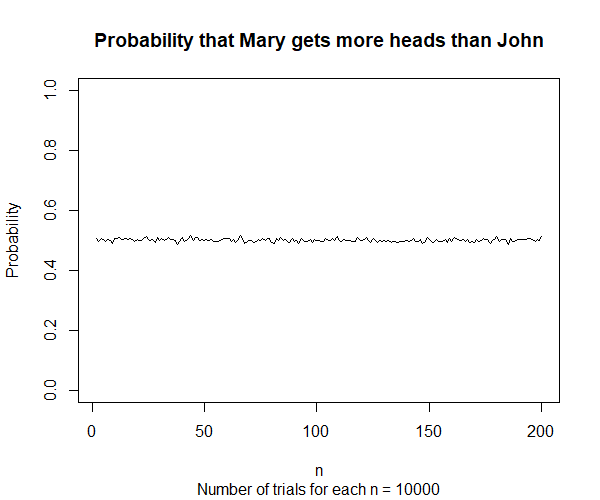
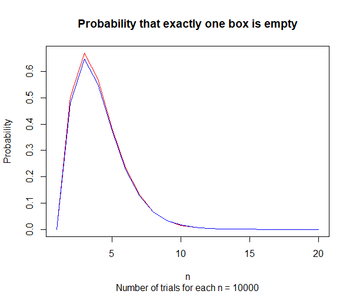
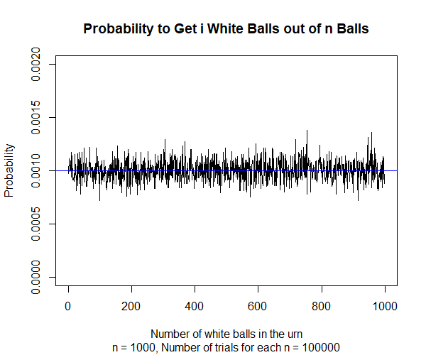

coin = c(0,1)
# 1 and 0 for head and tail respectively
# Number of trials
N = 10000
# Values of n for this simulation
n = 200
vec_trial = NULL
vec_prob = NULL
for(n in 2:n){
for(i in 1:N){
# Number of heads in Mary's tosses
M = sum(sample(coin,size=n+1, replace=TRUE))
# Number of heads in John's tosses
J = sum(sample(coin,size=n, replace=TRUE))
if (M>J){
vec_trial[i] = 1
}
else {
vec_trial[i] = 0
}
}
vec_prob[n-1] = sum(vec_trial)/N
}
plot(2:n, vec_prob, type="l" , ylim = c(0,1), main="Probability that Mary gets more heads than John", sub="Number of trials for each n = 10000", xlab="n", ylab="Probability")
# Number of trials
N = 10000
# Values of n for this simulation
n = 20
vec_n = 1:n
vec_prob = NULL
for (m in 1:n){
valid_outcome = 0
boxes_label = 1:m
for (k in 1:N){
num_balls_in_boxes = rep.int(0, times=m)
for (i in 1:m){
box_chosen = sample(boxes_label, size=1)
num_balls_in_boxes[box_chosen] = num_balls_in_boxes[box_chosen] + 1
}
if (sum(num_balls_in_boxes==0) == 1){
valid_outcome = valid_outcome + 1
}
}
vec_prob[m] = valid_outcome/N
}
stirling <- function(n) {
# Use Stirling to obtain this formula
fn = (n * (n - 1) * sqrt(2 * pi * n)) / (2 * exp(n))
return(fn)
}
plot(vec_n, vec_prob, type="l", main="Probability that exactly one box is empty", sub="Number of trials for each n = 10000", xlab="n", ylab="Probability", col="red")
lines(vec_n, stirling(vec_n), type="l", col="blue")
# Number of trials
N = 100000
# Number of balls in the urn at the end
n = 1000
# Vector consisting of number of white balls when the urn has n balls
vec_trial = 0
for(i in 1:N){
# Initially the urn contains one white (represented by 1) and one black (represented by 0)
urn = c(1,0)
k = length(urn)
while(k<n){
urn[k+1] = sample(urn, size=1) # Draw a ball from the urn
k = length(urn)
}
vec_trial[i] = sum(urn)
}
# Find the probability of getting i white balls out of n balls
vec_prob <- tabulate(vec_trial, nbins = n-1) / N
vec_i = 1:(n-1) # There is no way to have n white balls
plot(vec_i, vec_prob, type="l", ylim=c(0, 0.002), main="Probability to Get i White Balls out of n Balls", sub="n = 1000, Number of trials for each n = 100000", xlab="Number of white balls in the urn", ylab="Probability")
abline(a=1/(n-1), b=0, col="blue")